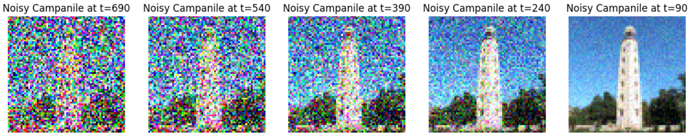
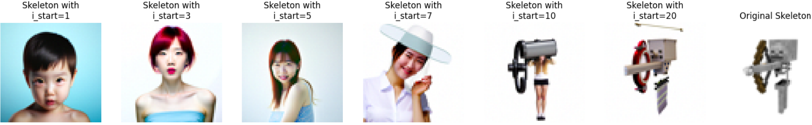
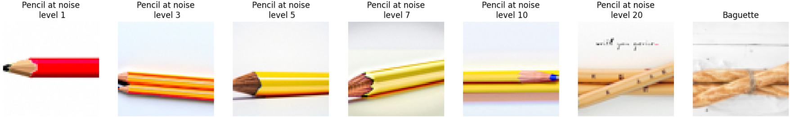
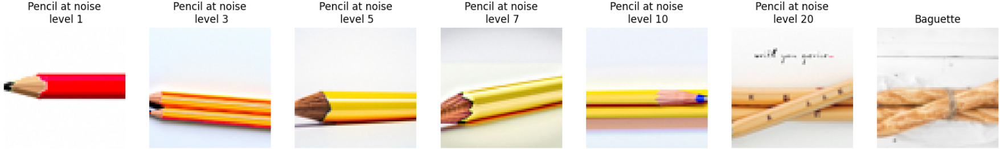
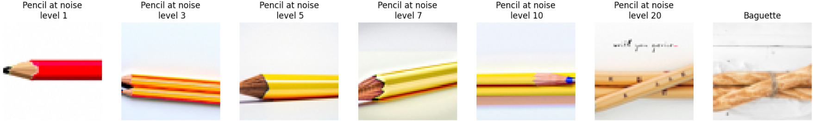

In the first part of this project, I will deploy diffusion models for image generation and denoising. I am
going to use the DeepFloydIF diffusion model, a two stage model trained by Stability AI. It was trained as a text-to-image model,
thus a text encoder (T5EncoderModel) is used to compute a couple of text embeddings such as 'an oil painting of an old man' for
conditional generation or 'a high quality photo' for an unconditional generation.
1.1: Implementing the Forward Process
In the forward process, we take a clean image and adds noise to it. mathematically, it is defined by
\[
q(x_t \mid x_0) = \mathcal{N}(x_t; \sqrt{\bar{\alpha}_t} x_0, (1 - \bar{\alpha}_t) \mathbf{I})
\]
\[
x_t = \sqrt{\bar{\alpha}_t} x_0 + \sqrt{1 - \bar{\alpha}_t} \epsilon \quad \text{where} \quad \epsilon \sim \mathcal{N}(0, 1)
\]
Given a clean image \( x_0 \), we get a noisy image \( x_t \) at timestep \( t \) by sampling from a Gaussian
with mean \( \sqrt{\bar{\alpha}_t} x_0 \) and variance \( (1 - \bar{\alpha}_t) \).
For the DeepFloyd models, T = 1000.
1.2: Classical Denoising
In previous projects, we used Gaussian blur filtering to try to remove the noise. Let's see the performance of such classical methods.
We should expect bad results with so many noise added to the image.
1.3: One-Step Denoising
Now, we'll use the pretrained diffusion model to denoise. The actual denoiser is found at
stage_1.unet. This is a U-Net that has already been trained on a
very large dataset of (x0, xt) pairs of images.
We can use it to estimate the Gaussian noise from the image. Then, we can remove this noise to recover
the estimated original image.
1.4: Iterative Denoising
In part 1.3, we see that the denoising U-Net does a much better job of projecting the image onto the natural image manifold, but it does get worse as we add more noise. This makes sense, as the problem is much harder with more noise.
But diffusion models are designed to denoise iteratively. In this part, we will denoise the image iteratively instead of all in one step.
In theory, we could start with noise \( x_{1000} \) at timestep \( T = 1000 \), denoise for one step to get an estimate of \( x_{999} \), and carry on until we get \( x_0 \). But this would require running the diffusion model 1000 times, which is quite slow.
It turns out, we can actually speed things up by skipping steps.
To skip steps, I create a list of timesteps that called strided_timesteps by introducing a regular stride step of 30, which will be much shorter than the full list of 1000 timesteps. strided_timesteps[0] will correspond to the noisiest image (and thus the largest \( t \)) and strided_timesteps[-1] will correspond to a clean image (and thus \( t = 0 \)).
On the \( i \)-th denoising step we are at \( t = \text{strided_timesteps}[i] \), and want to get to \( t' = \text{strided_timesteps}[i+1] \) (from more noisy to less noisy). To actually do this, we have the following formula:
\( x_0 \) is our current estimate of the clean image
\( v_\sigma \) is random noise, which in the case of DeepFloyd is also predicted.

1.5: Diffusion Model Sampling
In part 1.4, we use the diffusion model to denoise an image. Another thing we can do with the iterative_denoise function is to
generate images from scratch. We can do this by setting i_start = 0 and passing in random noise. This effectively denoises pure
noise. Lastly, the prompt "a high quality photo" is being passed in for unconditional results.
1.6: Classifier Free Guidance
In part 1.5, some of the generated images are not very good. To improve image quality,
I use a technique called Classifier-Free Guidance which improve the iamge quality but also at the expense of image diversity.
In CFG, we compute both a noise estimate conditioned on a text prompt, and an unconditional noise estimate.
We denote these \( \epsilon_c \) and \( \epsilon_u \). Then, we let our new noise estimate be:
where \( \gamma \) controls the strength of CFG. Notice that for \( \gamma = 0 \), we get an unconditional noise estimate,
and for \( \gamma = 1 \) we get the conditional noise estimate. The magic happens with extrapolation when \( \gamma > 1 \).
In this case, we get much higher quality images.
The image set below uses \( \gamma = 0 \).
1.7: Image-to-image Translation
In previous section, we take a real image, add noise to it, and then denoise. This effectively allows us to make edits
to existing images. The more noise we add, the larger the edit will be. This works because in order to denoise an image,
the diffusion model must to some extent "hallucinate" new things -- the model has to be "creative." Another way to think
about it is that the denoising process "forces" a noisy image back onto the manifold of natural images.
Here, we're going to take the original Campanile image, noise it a little, and force it back onto the image manifold without
any conditioning. This follows the SDEdit algorithm.
Here, I run the forward process to get a noisy test image at different time step, and then run the iterative_denoise_cfg
function using a starting index of [1, 3, 5, 7, 10, 20] time step and show the results.
We should expect a series of "edits" to the original image, gradually matching the original image closer and closer.
1.7.1: Editing Hand-Drawn and Web Images
I start with a nonrealistic image (a Minecraft skeleton) and tried to project it onto the natural image manifold with the same SDEdit algorithm.
Then I hand-drawn two images and apply the same algorithm. The outputs are provided below.

1.7.2: Inpainting
We can use the same procedure to implement inpainting.
That is, given an image \( x_{\text{orig}} \), and a binary mask m, we can create a new image that has the same
content where m is 0, but new content wherever m is 1.
To do this, I run the same diffusion denoising loop. But at every step, after obtaining \( x_t \), we "force" \( x_t \)
to have the same pixels as \( x_{\text{orig}} \) where m is 0, i.e.:
Essentially, we leave everything inside the edit mask alone, but we replace everything outside the edit mask with
our original image -- with the correct amount of noise added for timestep \( t \).
The outputs below shows impainting on the Campanile, a chibi figure, and the multi-head dragon
Once again, we will implement the same algorithm but guide the projection with a text prompt.
We expect the images gradually look more like original image, but also look like the text prompt.
The prompts used for the outputs below are "a rocket ship", "a pencil", and "a photo of a dog."

1.8: Visual Anagrams
Now I have all the tools to implement visual anagrams and create optical illusions with diffusion models. In this part, we
will create an image that looks like one object but when flipped upside down will reveal another object
To do this, I iteratively denoise an image \( x_t \) at step \( t \) normally with prompt 1, to obtain noise
estimate \( \epsilon_1 \).
But at the same time, we will flip \( x_t \) upside down, and denoise with prompt 2, to get noise estimate \( \epsilon_2 \).
We can flip \( \epsilon_2 \) back, to make it right-side up, and average the two noise estimates.
We can then perform a reverse/denoising diffusion step with the averaged noise estimate.
where U-Net is the diffusion model U-Net from before, flip(·) is a function that flips the image,
and \( p_1 \) and \( p_2 \) are two different text prompt embeddings. And our final noise estimate is \( \epsilon \).
1.9: Hybrid Images
The same idea in section 1.8 can be applied to generate hybrid images.
This is called Factorized Diffusion, which genreate a image that looks like one object but when seen from a distance
will reveal another object
I create a composite noise estimate \( \epsilon \), by estimating the noise with two different text prompts, and then
combining low frequencies from one noise estimate with high frequencies of the other. The algorithm is:
where UNet is the diffusion model UNet, \( f_{\text{lowpass}} \) is a low-pass function, \( f_{\text{highpass}} \) is a high-pass
function, and \( p_1 \) and \( p_2 \) are two different text prompt embeddings. Our final noise estimate is \( \epsilon \).
The Gaussian blur filter has a kernel size of 33 and a sigma of 2.
Bells and Whistles
I tried to design a course Logo with the techniques learned in this project.
The first attempt is to let the diffusion model autogenerates a Logo with iterative denoising with the prompt "a logo for computer vision"
Next, I hand-drawn a logo, manually add noise, then iteratively denoised the image with SDEdit at noise level 10
Lastly, I combine the two approaches. Use both SDEdit on my hand-drawn logo AND provide a relevant prompt ("a logo for computer vision")
that push the model to a certain direction.
Part B: Diffusion Models from Scratch!
The work prior to this section relies heavily on a pretrained model. In this section, I will train my own diffusion model on
MNIST dataset.
1.1 Implementing the Unconditional UNet
The architecture of unconditional UNet is given by the following graph.
1.2 Train a Denoiser Using UNet
We aim to solve the following denoising problem: Given a noisy image \( z \), we aim to train a denoiser \( D_\theta \) such that it maps \( z \) to a clean image \( x \). To do so, we can optimize over an L2 loss:
\[
L = \mathbb{E}_{z, x} \|D_\theta(z) - x\|^2.
\]
To train our denoiser, we need to generate training data pairs of \( (z, x) \), where each \( x \) is a clean MNIST digit. For each training batch, we can generate \( z \) from \( x \) using the following noising process:
\[
z = x + \sigma \epsilon, \quad \text{where } \epsilon \sim \mathcal{N}(0, I).
\]
I provided a quick visualization of the different noising processes over \( \sigma = [0.0, 0.2, 0.4, 0.5, 0.6, 0.8, 1.0] \)
1.2.1 Actual Training
Objective: Train a denoiser to denoise noisy image \( z \) with \( \sigma = 0.5 \) applied to a clean image \( x \).
Dataset and dataloader: Use the MNIST dataset via torchvision.datasets.MNIST with flags to access training and test sets. Train on the training set.
Shuffle the dataset before creating the dataloader. Batch size: 256. Epochs: 5.
I noise the image batches when fetched from the dataloader, so that in every epoch the network will see new noised images. This should improving generalization.
Model: Use the UNet architecture defined in section 1.1 with hidden dimension \( D = 128 \).
Optimizer: Use Adam optimizer with learning rate of \( 1\text{e-4} \).
1.2.2 Out-of-Distribution Testing
Note that my denoiser was trained on MNIST digits noised with \( \sigma = 0.5 \). Nonetheless, we can still apply the model to
noisy images with other \( \sigma \)'s that it wasn't trained for.
Below I visualized the denoiser results on test set digits with varying levels of noise \( \sigma = [0.0, 0.2, 0.4, 0.5, 0.6, 0.8,
1.0] \).
2. Implementing Conditional UNets for Noise Prediction
In part A, I trained a UNet to predict the clean image. Now for diffusion, I will train two conditional UNet models that can iteratively denoise an image.
I will implement algorithms listed in the DDPM paper.
In the previous loss function:
\[
L = \mathbb{E}_{z,x}\|D_\theta(z) - x\|^2.
\]
We change our UNet to predict the added noise \( \epsilon \) instead of the clean image \( x \).
Mathematically, these are equivalent since \( x = z - \sigma \epsilon \) (equation B.2), and here is the updated loss function
\[
L = \mathbb{E}_{z,x}\|\epsilon_\theta(z) - \epsilon\|^2
\]
where \( \epsilon_\theta \) is a UNet trained to predict noise.
For diffusion, we eventually want to sample a pure noise image \( \epsilon \sim \mathcal{N}(0, I) \) and generate a realistic image \( x \) from the noise iteratively for better result.
Recall in part A that we used the equation below to generate noisy images \( x_t \) from \( x_0 \) for some timestep \( t \) for \( t \in \{0, 1, \dots, T\} \):
Intuitively, when \( t = 0 \) we want \( x_t \) to be the clean image \( x_0 \), when \( t = T \) we want \( x_t \) to be pure
noise \( \epsilon \), and for \( t \in \{1, \dots, T-1\} \), \( x_t \) should be some linear combination of the two.
Create a list \( \beta \) of length \( T \) such that \( \beta_0 = 0.0001 \) and \( \beta_T = 0.02 \) and all other elements \( \beta_t \) for \( t \in \{1, \dots, T-1\} \) are evenly spaced between the two.
\( \alpha_t = 1 - \beta_t \)
\( \bar{\alpha}_t = \prod_{s=1}^t \alpha_s \), a cumulative product of \( \alpha_s \) for \( s \in \{1, \dots, t\} \).
Because we are working with simple MNIST digits, we can have a smaller \( T \) of 300 instead of the 1000 used in part A.
Observe how \( \bar{\alpha}_t \) is close to 1 for small \( T \) and close to 0 for \( T \). \( \beta \) is known as the
variance schedule that controls the amount of noise added at each timestep.
Now, to denoise image \( x_t \), we could simply apply our UNet \( \epsilon_\theta \) on \( x_t \) and get the noise \( \epsilon \).
Per our setup, we see that the variance of \( x_t \) varies with \( t \). So during the training, I condition the UNet with
timestep \( t \), giving us our final objective:
\[
L = \mathbb{E}_{x_0, x_t, t}\|\epsilon_\theta(x_t, t) - \epsilon\|^2
\]
2.1 Adding Time Conditioning to the UNet
To introduce scalar t into the UNet, the follow architecture is used. It introduces a new operator called FCBlock
which involve a linear-GELU-linear transformation.
2.2 Training the Time Conditioned UNet
During the training, we pick a random image from the training set, at a random \( t \), and train the denoiser to predict the
noise in \( x_t \). We repeat this for different images and different \( t \) values until the model converges.
In my case, I set the epoch to 20 for a fixed iteration.
Objective: Train a time-conditioned UNet \( \epsilon_\theta(x_t, t) \) to predict the noise in \( x_t \) given a noisy image \( x_t \) and a timestep \( t \).
Dataset and dataloader: Use the MNIST dataset via torchvision.datasets.MNIST with flags to access training and test sets. Train on the training set. Shuffle the dataset before creating the dataloader. Batch size: 128. Epochs: 20.
Model: Use the time-conditioned UNet architecture defined in section 2 with hidden dimension \( D = 64 \).
Optimizer: Use Adam optimizer with an initial learning rate of \( 1\text{e-3} \). We will be using an exponential learning rate decay scheduler with a gamma of \( 0.1^{(1.0/\text{num\_epochs})} \).
2.3 Sampling from the Time Conditioned UNet
Sampling follows the algorithm below. A sample output of the sampling is provide for the time conditioned model at epochs 5 and 20.
Sampling from 5 epochs model
2.4 Training the Class Conditioned UNet
To make the results better and give us more control for image generation, I condition the UNet on the class of the digit 0-9
This require adding 2 more FCBlocks to our UNet. Since we still want the UNet to work without it being conditioned on the class,
I implement dropout where the class conditioning one-hot vector is set to zero 10% of the time.
The training for this section will be the same as the time-conditioned model, with the only difference being the conditioning vector
and doing unconditional generation periodically.
2.5 Sampling from the Class Conditioned UNet
Sample process is the almost the same as section 1.4 in iterative denoising. I added classifier-free guidance since we are now conditioning on
the class and have a desired natural manifold that I want to diffuse to.
A sample output of the sampling is provide for the class conditioned model
at epochs 5 and 20.


 
